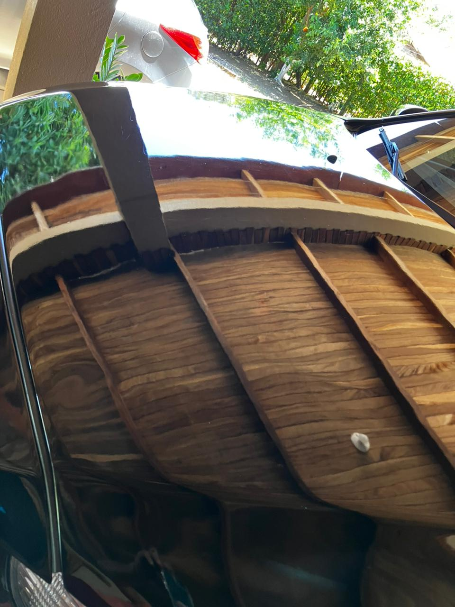
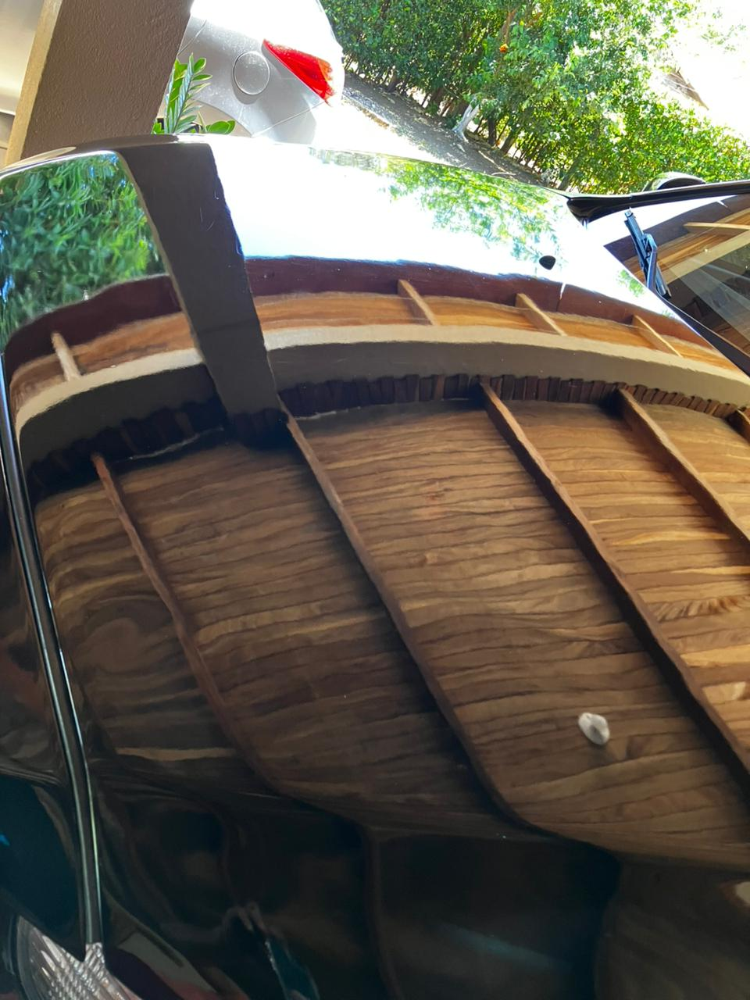

¿Quién dijo qué para andar el carro esteticamente bien, usted debe poner cerámicos?
Con nuestra asesoría realizas una inversión valiosa que te permite mantener tu carro en
excelente estado después de haber realizado el trabajo. Te brindamos recomendaciones
para que puedas mantener hasta por más de 6 meses el acabado obtenido.